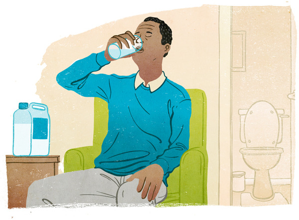
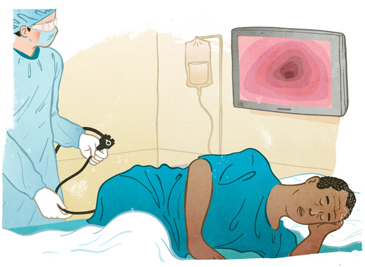
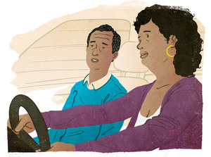
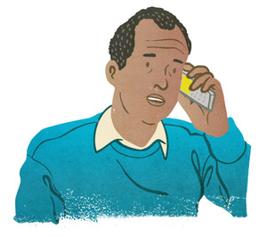

Colonoscopy Every 10 Years
 Screening and Treatment
Screening and Treatment
- Screening finds and removes pre-cancerous growths (polyps) before they become cancer
 Sedation
Sedation
- You'll need time to recover and someone to drive you home
- Complete Bowel Prep
- Plan to be close to a toilet the night before the procedure
 Risks
Risks
- There's a small but real risk from the procedure and medication
 Cost
Cost
- Colonoscopy is the most expensive screening choice on a one-time basis
Hear the stories
-
Sandra
tells the truth about colonoscopy prep and why she got screened.

-
Perfecto
tells us how a sense of humor gets you through a colonoscopy.

-
Jim
got his first colonoscopy after putting it off for years.

-
Barbara
found out for herself why the colonoscopy made sense.

-
John
felt like dancing when he got his colonoscopy test results.

-
Chris
felt good knowing they'd zapped a polyp during her colonoscopy.

Get the facts
The colonoscopy works by searching for polyps and signs of early cancer in your colon. Polyps are small growths that may eventually turn into cancer. Polyps can be removed during a colonoscopy. Cancer can be treated successfully if detected early. It takes a commitment of one to two full days to have a colonoscopy, which includes time for preparation and recovery. Specialists (often gastroenterologists) do this procedure regularly.
The Prep:

The cleaner your colon is, the easier you’ll make it for your doctor to find polyps. This means you'll need to completely empty your bowel before your colonoscopy. Most people are asked to drink a prescribed liquid substance the day before the procedure that causes frequent trips to the bathroom with diarrhea. Your doctor will give you specific instructions. You may need to adjust your other medications.
Because you will be sedated for the colonoscopy, you'll need to arrange for a ride home after the procedure.
The Procedure:

In the procedure room, the doctor and nurse will help you get comfortable as they connect you to an IV. Once you're relaxed from the medication, the doctor will insert a flexible tube through your anus and into your colon. Images of the inside of your colon will be viewable on a screen. If your doctor does find polyps (about 1 in 5 procedures), he or she can remove them immediately without you feeling anything. The colonoscopy takes about 20-40 minutes. You will be asleep or close to sleeping the entire time.
Recovery:

When you wake up, you'll feel a little bloated and will need to pass gas. Since your body will need time to recover from the sedation medication, you won't be able to drive or work, and probably shouldn't plan on making any major decisions the day of the procedure. Some people need a second recovery day.
It's normal to have a little bit of blood in your stool, especially if you had polyps removed. If bleeding does not stop, it's important for you to contact the doctor who performed your procedure.
Results:

Any sample tissues taken from your colon during the colonoscopy will be sent to a lab for testing. You should hear results within a week of your procedure, at which time make sure to discuss a follow-up plan with your gastroenterologist and your primary care doctor.
Follow-up:
It is recommended everybody screen regularly between the ages of 50 and 75. If no polyps are found during your colonoscopy and you have no other risk factors, you'll need another colonoscopy in 10 years. If polyps or other factors put you at higher risk, you may need one sooner. Screening more frequently than recommended may sound enticing, but it can expose you to unnecessary harms. Your doctor will help you decide what screening plan is right for you and if you should continue screening past the age of 75.
Learn more from elsewhere on the web
-
10 Questions you need to ask about Colonoscopy
The New York Times
2/25/2009Need help choosing a doctor?
-
Dave Barry: A Journey into my colon—and yours
The Miami Herald Tribune
2/22/2008Comedy for our ages
-

The Simpsons
Stand up 2 Cancer
12/7/2009Homer finds his wedding ring
-
Dr. Oz: When the Doctor Becomes a Patient

Huffington Post
9/6/2010Read about his wake-up call
-

Colonoscopy Procedure & Cost Information
New Choice Health
2010Compare colonoscopy costs in your area
-

Screening Colonoscopy vs Diagnostic Colonoscopy
Center for Gastrointestinal Endoscopy
It impacts your insurance coverage